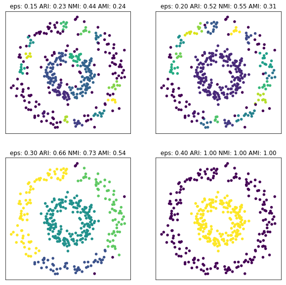
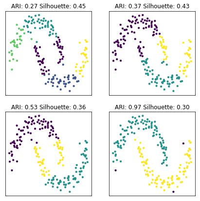
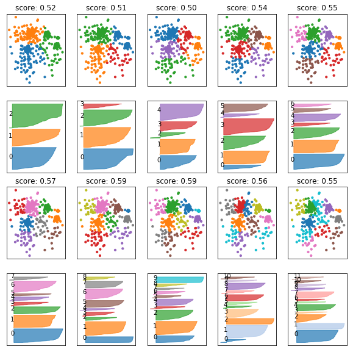
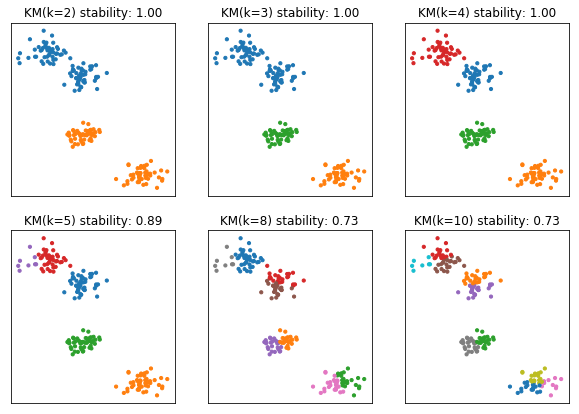

import numpy as np
import matplotlib.pyplot as plt
% matplotlib inline
plt.rcParams["savefig.dpi"] = 300
plt.rcParams["savefig.bbox"] = "tight"
np.set_printoptions(precision=3, suppress=True)
import pandas as pd
from sklearn.model_selection import train_test_split, cross_val_score
from sklearn.pipeline import make_pipeline
from sklearn.preprocessing import scale, StandardScaler
from sklearn.datasets import make_blobs, make_circles, make_moons
rng = np.random.RandomState(6)
X_blobs, y_blobs = make_blobs(n_samples=200, random_state=1)
X_blobs = scale(X_blobs @ rng.normal(0, 4, size=(2, 2)))
X_circles, y_circles = make_circles(n_samples=400, random_state=0, noise=.09, factor=.4)
X_circles = scale(X_circles)
X_moons, y_moons = make_moons(n_samples=200, random_state=0, noise=.09)
X_moons = scale(X_moons)
from sklearn.cluster import KMeans, DBSCAN, AgglomerativeClustering
from sklearn.neighbors import kneighbors_graph
from sklearn.metrics import adjusted_rand_score, silhouette_score, normalized_mutual_info_score, adjusted_mutual_info_score
fig, axes = plt.subplots(1, 3, subplot_kw={'xticks': (), 'yticks':()}, figsize=(10, 3))
for ax, (X, y) in zip(axes, [(X_blobs, y_blobs), (X_circles, y_circles), (X_moons, y_moons)]):
ax.scatter(X[:, 0], X[:, 1], c=y, s=10)

fig, axes = plt.subplots(2, 2, subplot_kw={'xticks': (), 'yticks':()}, figsize=(10, 10))
for ax, eps in zip(axes.ravel(), [.15, .2, .3, .4]):
dbs = DBSCAN(eps=eps).fit(X_circles)
ari = adjusted_rand_score(y_circles, dbs.labels_)
nmi = normalized_mutual_info_score(y_circles, dbs.labels_)
ami = adjusted_mutual_info_score(y_circles, dbs.labels_)
ax.set_title("eps: {:.2f} ARI: {:.2f} NMI: {:.2f} AMI: {:.2f}".format(eps, ari, nmi, ami))
ax.scatter(X_circles[:, 0], X_circles[:, 1], c=dbs.labels_, s=20)

fig, axes = plt.subplots(2, 4, subplot_kw={'xticks': (), 'yticks':()}, figsize=(20, 10))
for ax, eps in zip(axes.ravel(), [5, 6, 8, 10, 11, 12]):
dbs = KMeans(n_clusters=eps).fit(X_circles)
ari = adjusted_rand_score(y_circles, dbs.labels_)
nmi = normalized_mutual_info_score(y_circles, dbs.labels_)
ami = adjusted_mutual_info_score(y_circles, dbs.labels_)
ax.set_title("eps: {:.2f} ARI: {:.2f} NMI: {:.2f} AMI: {:.2f}".format(eps, ari, nmi, ami))
ax.scatter(X_circles[:, 0], X_circles[:, 1], c=dbs.labels_, s=20)

from sklearn.datasets import load_digits
digits = load_digits()
aris, nmis, amis = [], [], []
for i in range(1, 30):
km = KMeans(n_clusters=i).fit(digits.data)
ari = adjusted_rand_score(digits.target, km.labels_)
nmi = normalized_mutual_info_score(digits.target, km.labels_)
ami = adjusted_mutual_info_score(digits.target, km.labels_)
aris.append(ari)
nmis.append(nmi)
amis.append(ami)
plt.plot(aris, label="ARI")
plt.plot(amis, label="AMI")
plt.plot(nmis, label="NMI")
plt.legend()
<matplotlib.legend.Legend at 0x7f712f805390>
plt.plot(range(1, 30), aris, label="ARI")
plt.plot(range(1, 30), amis, label="AMI")
plt.plot(range(1, 30), nmis, label="NMI")
plt.legend()
plt.xlabel("n_clusters")
Text(0.5,0,'n_clusters')
fig, axes = plt.subplots(2, 2, subplot_kw={'xticks': (), 'yticks':()}, figsize=(7, 7))
agg = AgglomerativeClustering(n_clusters=3, connectivity=lambda x: kneighbors_graph(x, 10))
for ax, alg in zip(axes.ravel(), [KMeans(n_clusters=5), KMeans(n_clusters=3), agg, DBSCAN(eps=.3)]):
alg.fit(X)
ax.scatter(X[:, 0], X[:, 1], c=alg.labels_, s=10)
#ax.set_aspect("equal")
ari = adjusted_rand_score(y, alg.labels_)
silhouette = silhouette_score(X, alg.labels_)
ax.set_title("ARI: {:.2f} Silhouette: {:.2f}".format(ari, silhouette))

fig, axes = plt.subplots(3, 3, subplot_kw={'xticks': (), 'yticks':()}, figsize=(10, 10))
agg = AgglomerativeClustering(n_clusters=3, connectivity=lambda x: kneighbors_graph(x, 10))
for axes2, alg in zip(axes, [KMeans(n_clusters=3), DBSCAN(eps=.3), agg]):
for ax, (X, y) in zip(axes2, [(X_blobs, y_blobs), (X_circles, y_circles), (X_moons, y_moons)]):
alg.fit(X)
ax.scatter(X[:, 0], X[:, 1], c=alg.labels_, s=10)
#ax.set_aspect("equal")
ari = adjusted_rand_score(y, alg.labels_)
silhouette = silhouette_score(X, alg.labels_)
ax.set_title("ARI: {:.2f} Silhouette: {:.2f}".format(ari, silhouette))

from sklearn.metrics import silhouette_samples
def silhouette_plot(X, cluster_labels, ax=None):
silhouette_scores = silhouette_samples(X, cluster_labels)
if ax is None:
ax = plt.gca()
y_lower = 10
inliers = cluster_labels != -1
X = X[inliers]
cluster_labels = cluster_labels[inliers]
silhouette_scores = silhouette_scores[inliers]
labels = np.unique(cluster_labels)
cm = plt.cm.Vega10 if len(labels) <= 10 else plt.cm.Vega20
for i in labels:
# Aggregate the silhouette scores for samples belonging to
# cluster i, and sort them
ith_cluster_silhouette_values = \
silhouette_scores[cluster_labels == i]
ith_cluster_silhouette_values.sort()
size_cluster_i = ith_cluster_silhouette_values.shape[0]
y_upper = y_lower + size_cluster_i
color = cm(i)
ax.fill_betweenx(np.arange(y_lower, y_upper),
0, ith_cluster_silhouette_values,
facecolor=color, edgecolor=color, alpha=0.7)
# Label the silhouette plots with their cluster numbers at the middle
ax.text(-0.05, y_lower + 0.5 * size_cluster_i, str(i))
# Compute the new y_lower for next plot
y_lower = y_upper + 10 # 10 for the 0 samples
X, y = make_blobs(n_samples=1000, centers=4, random_state=14)
plt.scatter(X[:, 0], X[:, 1], s=10)
<matplotlib.collections.PathCollection at 0x7f712d0e3208>

fig, axes = plt.subplots(2, 5, subplot_kw={'xticks': (), 'yticks':()}, figsize=(10, 5))
for ax, n_clusters in zip(axes.T, [2, 3, 4, 5, 8]):
km = KMeans(n_clusters=n_clusters)
km.fit(X)
ax[0].scatter(X[:, 0], X[:, 1], c=plt.cm.Vega10(km.labels_), s=10)
silhouette_plot(X, km.labels_, ax=ax[1])
ax[0].set_title("score: {:.2f}".format(silhouette_score(X, km.labels_)))

rng = np.random.RandomState(1)
X, y = make_blobs(n_samples=500, centers=10, random_state=rng, cluster_std=[rng.gamma(2) for i in range(10)])
plt.scatter(X[:, 0], X[:, 1], s=5, alpha=.6)
plt.gca().set_aspect("equal")
#plt.scatter(X[:, 0], X[:, 1], c=plt.cm.Vega10(y), s=5, alpha=.6)
xlim = plt.xlim()

fig, axes = plt.subplots(4, 5, subplot_kw={'xticks': (), 'yticks':()}, figsize=(10, 10))
axes = np.hstack([axes[:2], axes[2:]]).T
for ax, n_clusters in zip(axes, range(3, 13)):
km = KMeans(n_clusters=n_clusters)
km.fit(X)
ax[0].scatter(X[:, 0], X[:, 1], c=plt.cm.Vega10(km.labels_), s=10)
silhouette_plot(X, km.labels_, ax=ax[1])
ax[0].set_title("score: {:.2f}".format(silhouette_score(X, km.labels_)))

fig, axes = plt.subplots(4, 5, subplot_kw={'xticks': (), 'yticks':()}, figsize=(10, 10))
axes = np.hstack([axes[:2], axes[2:]]).T
for ax, eps in zip(axes, np.linspace(0.1, 2, 10)):
db = DBSCAN(eps=eps)
db.fit(X)
colors = plt.cm.Vega10(db.labels_)
colors[db.labels_ == -1] = [.5, .5, .5, 1]
ax[0].scatter(X[:, 0], X[:, 1], c=colors, s=10)
silhouette_plot(X, db.labels_, ax=ax[1])
ax[0].set_title("score: {:.2f}".format(silhouette_score(X, db.labels_)))

fig, axes = plt.subplots(1, 5, subplot_kw={'xticks': (), 'yticks':()}, figsize=(10, 5))
for ax, n_clusters in zip(axes, [2, 5, 10, 15, 20]):
km = KMeans(n_clusters=n_clusters)
km.fit(digits.data)
silhouette_plot(digits.data, km.labels_, ax=ax)
ax.set_title("n_clusters={}\n score: {:.2f}".format(n_clusters, silhouette_score(digits.data, km.labels_)))

Cluster Stability¶
from sklearn.base import clone
from sklearn.utils import check_random_state
def cluster_stability(X, est, n_iter=20, random_state=None):
labels = []
indices = []
for i in range(n_iter):
# draw bootstrap samples, store indices
sample_indices = rng.randint(0, X.shape[0], X.shape[0])
indices.append(sample_indices)
est = clone(est)
if hasattr(est, "random_state"):
# randomize estimator if possible
est.random_state = rng.randint(1e5)
X_bootstrap = X[sample_indices]
est.fit(X_bootstrap)
# store clustering outcome using original indices
relabel = -np.ones(X.shape[0], dtype=np.int)
relabel[sample_indices] = est.labels_
labels.append(relabel)
scores = []
for l, i in zip(labels, indices):
for k, j in zip(labels, indices):
# we also compute the diagonal which is a bit silly
in_both = np.intersect1d(i, j)
scores.append(adjusted_rand_score(l[in_both], k[in_both]))
return np.mean(scores)
X, y = make_blobs(n_samples=200, centers=4, random_state=14)
fig, axes = plt.subplots(2, 3, subplot_kw={'xticks': (), 'yticks':()}, figsize=(10, 7))
for ax, n_clusters in zip(axes.ravel(), [2, 3, 4, 5, 8, 10]):
km = KMeans(n_clusters=n_clusters)
km.fit(X)
ax.scatter(X[:, 0], X[:, 1], c=plt.cm.Vega10(km.labels_), s=10)
ax.set_title("KM(k={}) stability: {:.2f}".format(n_clusters, cluster_stability(X, KMeans(n_clusters=n_clusters, n_init=10), n_iter=20)))

rng = np.random.RandomState(1)
X, y = make_blobs(n_samples=500, centers=10, random_state=rng, cluster_std=[rng.gamma(2) for i in range(10)])
fig, axes = plt.subplots(2, 3, subplot_kw={'xticks': (), 'yticks':()}, figsize=(10, 7))
for ax, n_clusters in zip(axes.ravel(), [2, 4, 6, 8, 10, 12]):
km = KMeans(n_clusters=n_clusters)
km.fit(X)
ax.scatter(X[:, 0], X[:, 1], c=plt.cm.Vega10(km.labels_), s=10)
ax.set_title("KM(k={}) stability: {:.2f}".format(n_clusters, cluster_stability(X, KMeans(n_clusters=n_clusters, n_init=10))))

stability = []
silhouette = []
ari = []
cluster_range = range(2, 30, 2)
for n_clusters in cluster_range:
km = KMeans(n_clusters=n_clusters)
stability.append(cluster_stability(digits.data, km))
km.fit(digits.data)
silhouette.append(silhouette_score(digits.data, km.labels_))
ari.append(adjusted_rand_score(digits.target, km.labels_))
st, = plt.plot(cluster_range, stability, label="stability", c='k')
plt.yticks(())
si, = plt.twinx().plot(cluster_range, silhouette, label="silhouette")
plt.yticks(())
ar, = plt.twinx().plot(cluster_range, ari, label="ari", c='r')
plt.yticks(())
plt.legend([st, si, ar], ["Stability", "Silhouette", "ARI"])
plt.xlabel("n_clusters")
plt.title("Scanning n_clusters with different scores")
Text(0.5,1,'Scanning n_clusters with different scores')
st, = plt.plot(cluster_range, stability, label="stability", c='k')
plt.ylabel("stability")
#plt.yticks(())
si, = plt.plot(cluster_range, silhouette, label="silhouette")
plt.ylabel("ARI, Silhouette")
#plt.yticks(())
ar, = plt.plot(cluster_range, ari, label="ari", c='r')
#plt.yticks(())
plt.legend([st, si, ar], ["Stability", "Silhouette", "ARI"])
plt.xlabel("n_clusters")
plt.title("Scanning n_clusters with different scores")
Text(0.5,1,'Scanning n_clusters with different scores')

# stability for different clustering algorithms on digits
from sklearn.cluster import AgglomerativeClustering
from sklearn.decomposition import PCA
km_stability = []
agg_stability = []
dbscan_stability = []
X = PCA(n_components=.9).fit_transform(digits.data / 16.)
cluster_range = range(2, 26, 2)
for n_clusters in cluster_range:
print(n_clusters)
km = KMeans(n_clusters=n_clusters, n_init=10, init="random")
km_stability.append(cluster_stability(X, km))
agg_stability.append(cluster_stability(X, AgglomerativeClustering(n_clusters=n_clusters)))
2
4
6
8
10
12
14
16
18
20
22
24
db_stability = []
n_clusters_db = []
for eps in np.linspace(.2, 2, 20):
print(eps)
db_stability.append(cluster_stability(X, DBSCAN(eps=eps)))
n_clusters_db.append(len(np.unique(DBSCAN(eps=eps).fit(X).labels_)))
0.2
0.294736842105
0.389473684211
0.484210526316
0.578947368421
0.673684210526
0.768421052632
0.863157894737
0.957894736842
1.05263157895
1.14736842105
1.24210526316
1.33684210526
1.43157894737
1.52631578947
1.62105263158
1.71578947368
1.81052631579
1.90526315789
2.0
cluster_range = range(2, 26, 2)
plt.plot(cluster_range, km_stability, label="k-means")
plt.plot(cluster_range, agg_stability, label="agglomerative")
plt.plot(n_clusters_db, db_stability, label="DBSCAN")
for eps, n_clusters, stability in zip(np.linspace(.2, 2, 20), n_clusters_db, db_stability):
plt.text(n_clusters, stability, "{:.2f}".format(eps))
plt.legend()
plt.xlabel("n_clusters")
plt.ylabel("stability")
Text(0,0.5,'stability')
from sklearn.manifold import TSNE
X_tsne = TSNE().fit_transform(digits.data / 16.)
fig, axes = plt.subplots(2, 3, subplot_kw={'xticks': (), 'yticks': ()}, figsize=(10, 5))
for ax, est in zip(axes.T, [DBSCAN(eps=1.2), AgglomerativeClustering(n_clusters=10), KMeans(n_clusters=10)]):
est.fit(X)
# X is PCA components
ax[0].set_title(est.__class__.__name__)
ax[0].scatter(X[:, 0], X[:, 1], c=plt.cm.Vega10(est.labels_), s=5, alpha=.7)
ax[1].scatter(X_tsne[:, 0], X_tsne[:, 1], c=plt.cm.Vega10(est.labels_), s=5, alpha=.7)
axes[0, 0].set_ylabel("PCA")
axes[1, 0].set_ylabel("TSNE")
Text(0,0.5,'TSNE')
dbscan = DBSCAN(eps=1.0, min_samples=5).fit(X)
plt.scatter(X_tsne[:, 0], X_tsne[:, 1], c=plt.cm.Vega20(dbscan.labels_), s=5, alpha=.7)
np.bincount(dbscan.labels_ + 1)
array([552, 163, 114, 161, 27, 144, 42, 121, 86, 122, 11, 76, 4,
56, 7, 7, 7, 10, 24, 7, 4, 8, 13, 12, 3, 11, 5])

fig, axes = plt.subplots(2, 5, subplot_kw={'xticks': (), 'yticks': ()}, figsize=(10, 5))
km = KMeans(n_clusters=10).fit(digits.data)
for ax, center in zip(axes.ravel(), km.cluster_centers_):
ax.imshow(center.reshape(8, 8), cmap='gray_r')
fig.suptitle("K-Means cluster centers")
Text(0.5,0.98,'K-Means cluster centers')

agg = AgglomerativeClustering(n_clusters=10).fit(digits.data)
fig, axes = plt.subplots(5, 10, subplot_kw={'xticks': (), 'yticks': ()}, figsize=(10, 5))
for ax, center in zip(axes.T, range(10)):
cluster_mask = agg.labels_ == center
for a, im in zip(ax, digits.data[cluster_mask]):
a.imshow(im.reshape(8, 8), cmap='gray_r')

# PCA is not really neccessary but we know a good eps value
# when using PCA.
X = PCA(n_components=.9).fit_transform(digits.data / 16.)
dbscan = DBSCAN(eps=1.2).fit(X)
clusters = np.unique(dbscan.labels_)
n_clusters = len(clusters)
fig, axes = plt.subplots(5, n_clusters, subplot_kw={'xticks': (), 'yticks': ()}, figsize=(10, 5))
for ax, center in zip(axes.T, clusters):
cluster_mask = dbscan.labels_ == center
ax[0].set_title(np.sum(cluster_mask))
for a, im in zip(ax, digits.data[cluster_mask]):
a.imshow(im.reshape(8, 8), cmap='gray_r')

adult¶
import os
# The file has no headers naming the columns, so we pass header=None
# and provide the column names explicitly in "names"
adult_path = os.path.join("adult.data")
data = pd.read_csv(
adult_path, header=None, index_col=False,
names=['age', 'workclass', 'fnlwgt', 'education', 'education-num',
'marital-status', 'occupation', 'relationship', 'race', 'gender',
'capital-gain', 'capital-loss', 'hours-per-week', 'native-country',
'income'])
data = data.drop("fnlwgt", axis=1)
data.head()
| age | workclass | education | education-num | marital-status | occupation | relationship | race | gender | capital-gain | capital-loss | hours-per-week | native-country | income | |
|---|---|---|---|---|---|---|---|---|---|---|---|---|---|---|
| 0 | 39 | State-gov | Bachelors | 13 | Never-married | Adm-clerical | Not-in-family | White | Male | 2174 | 0 | 40 | United-States | <=50K |
| 1 | 50 | Self-emp-not-inc | Bachelors | 13 | Married-civ-spouse | Exec-managerial | Husband | White | Male | 0 | 0 | 13 | United-States | <=50K |
| 2 | 38 | Private | HS-grad | 9 | Divorced | Handlers-cleaners | Not-in-family | White | Male | 0 | 0 | 40 | United-States | <=50K |
| 3 | 53 | Private | 11th | 7 | Married-civ-spouse | Handlers-cleaners | Husband | Black | Male | 0 | 0 | 40 | United-States | <=50K |
| 4 | 28 | Private | Bachelors | 13 | Married-civ-spouse | Prof-specialty | Wife | Black | Female | 0 | 0 | 40 | Cuba | <=50K |
data_ = data.drop("income", axis=1)
categorical = data_.columns[data_.dtypes != "int64"]
data_dummies = pd.get_dummies(data_[categorical],
columns=categorical)
data_dummies.shape
(32561, 102)
# subsample the data. Still takes a while. Maybe MiniBatchKMeans would be more appropriate
X = data_dummies.values
X = scale(X)
/home/andy/checkout/scikit-learn/sklearn/utils/validation.py:558: DataConversionWarning: Data with input dtype uint8 was converted to float64 by the scale function. warnings.warn(msg, DataConversionWarning)
adult_pca = PCA(n_components=2).fit_transform(X)
km = KMeans(n_clusters=3).fit(X)
km.labels_
array([1, 2, 1, ..., 1, 1, 1], dtype=int32)
plt.scatter(adult_pca[:, 0], adult_pca[:, 1], c=km.labels_, alpha=.7)
<matplotlib.collections.PathCollection at 0x7f71253fc0b8>

stability = []
silhouette = []
ari = []
cluster_range = range(2, 15, 2)
for n_clusters in cluster_range:
print(n_clusters)
km = KMeans(n_clusters=n_clusters)
stability.append(cluster_stability(X, km, n_iter=10))
km.fit(X)
silhouette.append(silhouette_score(X, km.labels_))
ari.append(adjusted_rand_score(data.income, km.labels_))
FIXME?! crashes?
2
4
---------------------------------------------------------------------------
KeyboardInterrupt Traceback (most recent call last)
<ipython-input-46-ae3590749ddf> in <module>()
8 stability.append(cluster_stability(X, km, n_iter=10))
9 km.fit(X)
---> 10 silhouette.append(silhouette_score(X, km.labels_))
11 ari.append(adjusted_rand_score(data.income, km.labels_))
~/checkout/scikit-learn/sklearn/metrics/cluster/unsupervised.py in silhouette_score(X, labels, metric, sample_size, random_state, **kwds)
99 else:
100 X, labels = X[indices], labels[indices]
--> 101 return np.mean(silhouette_samples(X, labels, metric=metric, **kwds))
102
103
~/checkout/scikit-learn/sklearn/metrics/cluster/unsupervised.py in silhouette_samples(X, labels, metric, **kwds)
167 check_number_of_labels(len(le.classes_), X.shape[0])
168
--> 169 distances = pairwise_distances(X, metric=metric, **kwds)
170 unique_labels = le.classes_
171 n_samples_per_label = np.bincount(labels, minlength=len(unique_labels))
~/checkout/scikit-learn/sklearn/metrics/pairwise.py in pairwise_distances(X, Y, metric, n_jobs, **kwds)
1249 func = partial(distance.cdist, metric=metric, **kwds)
1250
-> 1251 return _parallel_pairwise(X, Y, func, n_jobs, **kwds)
1252
1253
~/checkout/scikit-learn/sklearn/metrics/pairwise.py in _parallel_pairwise(X, Y, func, n_jobs, **kwds)
1088 if n_jobs == 1:
1089 # Special case to avoid picklability checks in delayed
-> 1090 return func(X, Y, **kwds)
1091
1092 # TODO: in some cases, backend='threading' may be appropriate
~/checkout/scikit-learn/sklearn/metrics/pairwise.py in euclidean_distances(X, Y, Y_norm_squared, squared, X_norm_squared)
244 YY = row_norms(Y, squared=True)[np.newaxis, :]
245
--> 246 distances = safe_sparse_dot(X, Y.T, dense_output=True)
247 distances *= -2
248 distances += XX
~/checkout/scikit-learn/sklearn/utils/extmath.py in safe_sparse_dot(a, b, dense_output)
138 return ret
139 else:
--> 140 return np.dot(a, b)
141
142
KeyboardInterrupt:
st, = plt.plot(cluster_range, stability, label="stability", c='k')
plt.yticks(())
si, = plt.twinx().plot(cluster_range, silhouette, label="silhouette")
plt.yticks(())
ar, = plt.twinx().plot(cluster_range, ari, label="ari", c='r')
plt.yticks(())
plt.legend([st, si, ar], ["Stability", "Silhouette", "ARI"])
plt.xlabel("n_clusters")
plt.title("Scanning n_clusters with different scores")
<matplotlib.text.Text at 0x7f848fcc4908>

Breast Cancer¶
from sklearn.datasets import load_breast_cancer
data = load_breast_cancer()
X = data.data
stability = []
silhouette = []
ari = []
cluster_range = range(2, 30, 2)
for n_clusters in cluster_range:
km = KMeans(n_clusters=n_clusters, n_init=10, init="random")
stability.append(cluster_stability(X, km, n_iter=10))
km.fit(X)
silhouette.append(silhouette_score(X, km.labels_))
ari.append(adjusted_rand_score(data.target, km.labels_))
/home/andy/checkout/scikit-learn/sklearn/cluster/k_means_.py:909: ConvergenceWarning: Number of distinct clusters (19) found smaller than n_clusters (20). Possibly due to duplicate points in X. return_n_iter=True) /home/andy/checkout/scikit-learn/sklearn/cluster/k_means_.py:909: ConvergenceWarning: Number of distinct clusters (21) found smaller than n_clusters (22). Possibly due to duplicate points in X. return_n_iter=True) /home/andy/checkout/scikit-learn/sklearn/cluster/k_means_.py:909: ConvergenceWarning: Number of distinct clusters (21) found smaller than n_clusters (22). Possibly due to duplicate points in X. return_n_iter=True) /home/andy/checkout/scikit-learn/sklearn/cluster/k_means_.py:909: ConvergenceWarning: Number of distinct clusters (25) found smaller than n_clusters (26). Possibly due to duplicate points in X. return_n_iter=True) /home/andy/checkout/scikit-learn/sklearn/cluster/k_means_.py:909: ConvergenceWarning: Number of distinct clusters (27) found smaller than n_clusters (28). Possibly due to duplicate points in X. return_n_iter=True) /home/andy/checkout/scikit-learn/sklearn/cluster/k_means_.py:909: ConvergenceWarning: Number of distinct clusters (27) found smaller than n_clusters (28). Possibly due to duplicate points in X. return_n_iter=True) /home/andy/checkout/scikit-learn/sklearn/cluster/k_means_.py:909: ConvergenceWarning: Number of distinct clusters (27) found smaller than n_clusters (28). Possibly due to duplicate points in X. return_n_iter=True) /home/andy/checkout/scikit-learn/sklearn/cluster/k_means_.py:909: ConvergenceWarning: Number of distinct clusters (27) found smaller than n_clusters (28). Possibly due to duplicate points in X. return_n_iter=True)
st, = plt.plot(cluster_range, stability, label="stability", c='k')
plt.yticks(())
si, = plt.twinx().plot(cluster_range, silhouette, label="silhouette")
plt.yticks(())
ar, = plt.twinx().plot(cluster_range, ari, label="ari", c='r')
plt.yticks(())
plt.legend([st, si, ar], ["Stability", "Silhouette", "ARI"])
plt.xlabel("n_clusters")
plt.title("Scanning n_clusters with different scores")
Text(0.5,1,'Scanning n_clusters with different scores')

from sklearn.datasets import fetch_lfw_people
people = fetch_lfw_people(min_faces_per_person=20, resize=0.7)
image_shape = people.images[0].shape
fix, axes = plt.subplots(2, 5, figsize=(15, 8), subplot_kw={'xticks': (), 'yticks': ()})
for target, image, ax in zip(people.target, people.images, axes.ravel()):
ax.imshow(image, cmap='gray')
ax.set_title(people.target_names[target])

# have at most 50 images per preson - otherwise too much bush
mask = np.zeros(people.target.shape, dtype=np.bool)
for target in np.unique(people.target):
mask[np.where(people.target == target)[0][:50]] = 1
X_people = people.data[mask]
y_people = people.target[mask]
# scale the grayscale values to be between 0 and 1
# instead of 0 and 255 for better numeric stability
X_people = X_people / 255.
from sklearn.decomposition import PCA
X = PCA(n_components=100, whiten=True).fit_transform(X_people)
stability = []
silhouette = []
ari = []
cluster_range = range(2, 50, 4)
for n_clusters in cluster_range:
print(n_clusters)
km = KMeans(n_clusters=n_clusters, n_init=5, init="random")
stability.append(cluster_stability(X, km, n_iter=10))
km.fit(X)
silhouette.append(silhouette_score(X, km.labels_))
ari.append(adjusted_rand_score(y_people, km.labels_))
2
6
10
14
18
22
26
30
34
38
42
46
st, = plt.plot(cluster_range, stability, label="stability", c='k')
plt.ylabel("stability")
#plt.yticks(())
si, = plt.twinx().plot(cluster_range, silhouette, label="silhouette")
plt.ylabel("ARI, Silhouette")
#plt.yticks(())
ar, = plt.plot(cluster_range, ari, label="ari", c='r')
#plt.yticks(())
plt.legend([st, si, ar], ["Stability", "Silhouette", "ARI"])
plt.xlabel("n_clusters")
plt.title("Scanning n_clusters with different scores")
Text(0.5,1,'Scanning n_clusters with different scores')

from sklearn.linear_model import LogisticRegression
from sklearn.model_selection import GridSearchCV
km = KMeans(n_init=1, init="random")
pipe = make_pipeline(km, LogisticRegression())
param_grid = {'kmeans__n_clusters': [10, 50, 100, 200, 500]}
grid = GridSearchCV(pipe, param_grid, cv=5, verbose=True)
grid.fit(X, y_people)
Fitting 5 folds for each of 6 candidates, totalling 30 fits
[Parallel(n_jobs=1)]: Done 30 out of 30 | elapsed: 7.0min finished
GridSearchCV(cv=5, error_score='raise',
estimator=Pipeline(memory=None,
steps=[('kmeans', KMeans(algorithm='auto', copy_x=True, init='random', max_iter=300,
n_clusters=8, n_init=1, n_jobs=1, precompute_distances='auto',
random_state=None, tol=0.0001, verbose=0)), ('logisticregression', LogisticRegression(C=1.0, class_weight=N...y='l2', random_state=None, solver='liblinear', tol=0.0001,
verbose=0, warm_start=False))]),
fit_params={}, iid=True, n_jobs=1,
param_grid={'kmeans__n_clusters': [10, 50, 100, 200, 500, 1000]},
pre_dispatch='2*n_jobs', refit=True, return_train_score=True,
scoring=None, verbose=True)
results = pd.DataFrame(grid.cv_results_)
res_pivot = results.pivot_table(values=['mean_test_score', 'mean_train_score'],
index="param_kmeans__n_clusters")
res_pivot.plot()
<matplotlib.axes._subplots.AxesSubplot at 0x7f1ca3e8d390>

bank_notes = pd.read_csv("https://archive.ics.uci.edu/ml/machine-learning-databases/00267/data_banknote_authentication.txt", header=None)
bank_data = bank_notes.drop(4, axis=1)
pd.plotting.scatter_matrix(bank_data, c=bank_notes[4], alpha=.6)
/home/andy/anaconda3/lib/python3.6/site-packages/ipykernel/__main__.py:1: FutureWarning: 'pandas.tools.plotting.scatter_matrix' is deprecated, import 'pandas.plotting.scatter_matrix' instead. if __name__ == '__main__':
array([[<matplotlib.axes._subplots.AxesSubplot object at 0x7f71255e7f60>,
<matplotlib.axes._subplots.AxesSubplot object at 0x7f7125261630>,
<matplotlib.axes._subplots.AxesSubplot object at 0x7f712f765668>,
<matplotlib.axes._subplots.AxesSubplot object at 0x7f7126c7f588>],
[<matplotlib.axes._subplots.AxesSubplot object at 0x7f712f4e8978>,
<matplotlib.axes._subplots.AxesSubplot object at 0x7f712f4e89b0>,
<matplotlib.axes._subplots.AxesSubplot object at 0x7f712cfea978>,
<matplotlib.axes._subplots.AxesSubplot object at 0x7f712c2750b8>],
[<matplotlib.axes._subplots.AxesSubplot object at 0x7f712cea55f8>,
<matplotlib.axes._subplots.AxesSubplot object at 0x7f712c1c4748>,
<matplotlib.axes._subplots.AxesSubplot object at 0x7f712c2119e8>,
<matplotlib.axes._subplots.AxesSubplot object at 0x7f712cf709e8>],
[<matplotlib.axes._subplots.AxesSubplot object at 0x7f712c2b8f28>,
<matplotlib.axes._subplots.AxesSubplot object at 0x7f712c2b3470>,
<matplotlib.axes._subplots.AxesSubplot object at 0x7f712cbac4a8>,
<matplotlib.axes._subplots.AxesSubplot object at 0x7f7126f303c8>]], dtype=object)

bla = PCA().fit_transform(scale(bank_data))
plt.scatter(bla[:, 0], bla[:, 1], c=bank_notes[4])
<matplotlib.collections.PathCollection at 0x7f712cbd3240>
bank_tsne = TSNE(perplexity=400).fit_transform(scale(bank_data))
plt.scatter(bank_tsne[:, 0], bank_tsne[:, 1], c=bank_notes[4], alpha=.5)
<matplotlib.collections.PathCollection at 0x7f712ccbe7f0>
X = scale(bank_data)
y = bank_notes[4]
stability = []
silhouette = []
ari = []
cluster_range = range(2, 30, 2)
for n_clusters in cluster_range:
km = KMeans(n_clusters=n_clusters, n_init=10, init="random")
stability.append(cluster_stability(X, km))
km.fit(X)
silhouette.append(silhouette_score(X, km.labels_))
ari.append(adjusted_rand_score(y, km.labels_))
st, = plt.plot(cluster_range, stability, label="stability", c='k')
plt.ylabel("stability")
#plt.yticks(())
si, = plt.twinx().plot(cluster_range, silhouette, label="silhouette")
plt.ylabel("ARI, Silhouette")
#plt.yticks(())
ar, = plt.plot(cluster_range, ari, label="ari", c='r')
#plt.yticks(())
plt.legend([st, si, ar], ["Stability", "Silhouette", "ARI"])
plt.xlabel("n_clusters")
plt.title("Scanning n_clusters with different scores")
Text(0.5,1,'Scanning n_clusters with different scores')